Camera intrinsic calibration
Photograph a chessboard from a dozen or so angles, and OpenCV works out your webcam's focal length, optical centre and lens distortion. You can then use those numbers to straighten the camera's images.
- You need
- A laptop with a webcam (built-in or USB) and a printed chessboard (or ChArUco board)
- Code
calibration_tutorial/intrinsic/, four Python scripts (capture in the terminal or in a window, chessboard and ChArUco calibration)- You get
- K, five distortion coefficients and an error in pixels
- Follows
- Slides 1–13, “Camera Intrinsic Calibration”
Theory
Why calibrate?
Goal. Estimate the intrinsic parameters of your camera: the numbers that describe the camera itself, independent of where it is pointing.
Why it matters. With them, you can map accurately between a 3D point in the world and the pixel where it appears. That mapping is essential for measuring objects in images, reconstructing 3D scenes, augmented reality and robot vision.
Application in this lab. Correct lens distortion so that straight lines in the world appear straight in the image.


Synthetic images: the same flat chessboard rendered through the distortion model of section 1.4. Calibration estimates the coefficients, and undistortion runs the model in reverse.
OpenCVtutorial: Camera Calibration › Goal·cv2.calibrateCamera·cv2.undistort
Pinholes and real lenses
Pinhole model. Light from a 3D object passes through a tiny hole and forms an upside-down 2D image on the back wall of the camera (the image plane, at distance \(f\), the focal length, behind the hole). Each point in the world sends exactly one ray through the hole, so straight lines stay straight. Your eye works on roughly the same principle, with the pupil as the hole.
Real cameras use lenses. A pinhole lets through very little light, so real cameras use a lens to collect and focus many rays from each point. The lens is curved, though, and its magnification changes slightly with distance from the centre: rays towards the edge of the field are bent slightly too much (or too little). That is distortion, and it is strongest at the edges of the image.
OpenCVcalib3d reference › pinhole camera model·tutorial: Camera Calibration › Basics
Radial and tangential distortion
Radial distortion is the most common kind: straight lines in the world come out curved, and the effect grows with distance from the image centre. Using the radial distortion coefficients \(k_1, k_2, k_3\) (defined in section 1.4), lines bow outwards in barrel distortion (k₁ < 0, typical of wide-angle lenses) and inwards in pincushion distortion (k₁ > 0). When k₂ and k₃ are also non-zero, as in the webcam results of section 4.1, the sign of k₁ alone does not tell you which type you have.
Tangential distortion appears mainly when the lens is not exactly parallel to the image sensor. The picture looks slightly tilted or stretched to one side, so parts of the scene seem a little nearer or further than they really are.
Try it below. The grey grid is what an ideal pinhole camera would record; the black grid is the same grid seen through a lens with the coefficients you set. Drag the red probe to see the formula from the next section evaluated at that pixel.
OpenCVbased on: Camera Calibration › Basics·calib3d reference › barrel and pincushion·fisheye reference
The distortion model
OpenCV describes the lens with five numbers, the distortion coefficients, always stored in this order:
The radial coefficients \(k_1, k_2, k_3\) model barrel and pincushion distortion (curved lines). The tangential coefficients \(p_1, p_2\) model the tilts and shifts caused by a lens that is slightly misaligned.
Both act on the normalised image coordinates \((x, y)\) of a point — its unitless position on a plane one unit in front of the camera (\(x = X_c / Z_c,\; y = Y_c / Z_c\), section 1.5), before converting to pixels. OpenCV applies them together:
Because of the \(r^2, r^4, r^6\) terms, the correction is tiny near the centre (\(r \approx 0\)) and largest in the image corners. That is why your calibration images need the board near the edges and corners of the frame (section 2.3).
Undistortion runs this mapping in reverse: for every pixel in the corrected image, OpenCV asks where it came from in the distorted photo. You never have to invert the polynomial yourself.
OpenCVcalib3d reference › distortion model·tutorial: Camera calibration With OpenCV › Theory·cv2.initUndistortRectifyMap
The camera model
A camera model is the mathematical recipe for where a 3D world point \(P = (X, Y, Z)\) lands in the image, at pixel \(p = (u, v)\). In homogeneous coordinates:
The scale factor \(s\) is the point's depth in front of the camera; dividing by it is what makes distant objects look smaller. Up to that scale, \(p = K[R \mid t]\,P\).
| Group | Symbol | Meaning | Changes when… |
|---|---|---|---|
| Extrinsic | \(R\) | Rotation from world (board) coordinates to camera coordinates: how the board is turned, as seen from the camera | you move the camera or the board |
| \(t\) | Translation: the world origin (the board's first corner) in camera coordinates | you move the camera or the board | |
| Intrinsic | \(f_x, f_y\) | Focal length in pixel units (horizontal and vertical: physical focal length divided by pixel width or height; nearly equal on sensors with square pixels) | you zoom, refocus or change resolution |
| \(c_x, c_y\) | Optical centre (principal point), in pixels — where the lens's optical axis hits the image sensor (usually near the image centre) | you change resolution or crop | |
| \(k_1 \dots p_2\) | Distortion coefficients (section 1.4) | you change the lens or the focus |
\(t\) is not the camera's position in the world. It is the other way round: \(t\) is the world origin seen from the camera. The camera's own position in world coordinates is \(-R^\top t\).
The full chain that OpenCV's cv2.projectPoints follows, and that calibration fits, is:
- World → camera. \(\;[X_c, Y_c, Z_c]^\top = R\,[X, Y, Z]^\top + t\)
- Normalise. \(\;x = X_c / Z_c,\; y = Y_c / Z_c\) (here \(s = Z_c\))
- Distort. \(\;(x, y) \to (x_d, y_d)\) with the model of section 1.4
- To pixels. \(\;u = f_x\,x_d + c_x,\; v = f_y\,y_d + c_y\)
Calibration estimates the intrinsics (K and the distortion coefficients), which belong to the camera. As a by-product, it also returns the extrinsics of every calibration photo, i.e. where the board was each time.
OpenCVcalib3d reference › projection with A and [R|t]·cv2.projectPoints·cv2.calibrateCamera
Prepare
The task
Use OpenCV to calibrate your camera and undistort an image.
By the end of the lab you should have:
- a folder of 10–20 chessboard photos taken with your webcam;
- your camera matrix \(K\) and distortion coefficients, saved in
calibration_data.npz; - the root-mean-square (RMS) reprojection error, in pixels, as a measure of how good the calibration is;
- an undistorted image to compare with the original.
The lab uses two core scripts from the course repository: w3_calibration_cap.py captures the photos (or use the GUI version, w3_calibration_gui.py, in section 3.2) and w3_calibration.py calibrates. A separate script, w3_calibration_charuco.py, does the same with a ChArUco board: that is option B in section 2.2.
OpenCVsample: calibrate.py·tutorial: Camera calibration With OpenCV › Goal
The calibration target
Purpose of data collection. To calibrate, we need many pairs of a known 3D point and the 2D pixel where it appears. A chessboard (option A, as on the slides) provides both: it is flat (so every corner has \(Z = 0\)), its squares have a known size, and OpenCV can find its corners automatically and precisely.
OpenCV looks for the inner corners, the points where four squares meet, not the squares themselves. Count them carefully, because the script must be told the exact number:
The lab uses a 5 × 8-square board with 34 mm squares — the same one shown in the sample photos. It has 4 × 7 inner corners (the order of the two numbers in chessboard_size does not matter for detection). The scripts are already set up for it:
chessboard_size = (4, 7) # INNER corners = (squares - 1) per direction; the calib.io 5x8-square board is (4, 7)
square_size = 34.0 # Edge of one printed square in mm. It only scales tvecs: K, distortion and errors do not depend on itOpenCVcv2.findChessboardCorners·tutorial: Camera Calibration › Code
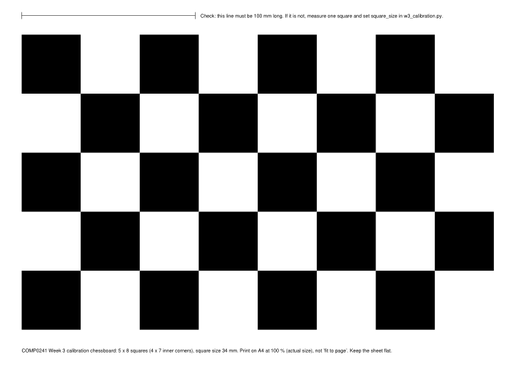
Need a board? Print chessboard_5x8_34mm_A4.pdf on A4 at 100% (“Actual size”, not “Fit to page”), then measure the line at the top: it must be exactly 100 mm. If it isn't, measure five squares, divide by five and enter that value for square_size.
Fix the sheet flat on something stiff (a clipboard, foam board or thick cardboard), with glue or tape along all four edges, and use matte paper: a bent sheet or a reflection spoils the calibration (section 2.3).
- Set
chessboard_sizeto (squares across − 1, squares down − 1), in bothw3_calibration.pyandw3_calibration_cap.py. The order of the two numbers does not matter for detection. - Print at 100% scale (not “Fit to page”), measure one square with a ruler, and set
square_sizeto that value. square_sizeonly sets the units of the board positions (tvecs). K, the distortion coefficients and the error come out the same whatever you type there.
Option B: a ChArUco board
A ChArUco (Chessboard + ArUco) board is a chessboard with an ArUco marker (a small square barcode) in every white square. The markers give every inner corner a unique ID, so OpenCV knows which corner it is looking at even when it sees only part of the board. The maths is unchanged: the same 3D–2D corner pairs go into the same cv2.calibrateCamera call.
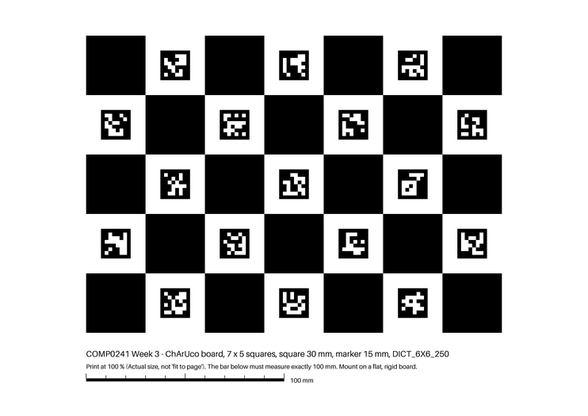
Print charuco_board_A4.pdf at 100% (“Actual size”) and check that the bar under the board measures exactly 100 mm. It has the same layout and markers as the board in sample_charuco_images/. Its 6 × 4 = 24 inner corners are numbered 0–23.
The settings sit at the top of w3_calibration_charuco.py. Change them only if you print a different board:
SQUARES_X = 7 # squares across
SQUARES_Y = 5 # squares down
SQUARE_LENGTH = 30.0 # side of a chessboard square, in mm (measure your print)
MARKER_LENGTH = 15.0 # side of an ArUco marker, in mm
DICTIONARY = cv2.aruco.DICT_6X6_250OpenCVcv2.aruco.CharucoBoard·tutorial: Detection of ChArUco Boards › ChArUco Board Creation
| A · Chessboard | B · ChArUco | |
|---|---|---|
| Follows the slides | Yes, exactly | Same maths, different detector |
| Printable board | chessboard_5x8_34mm_A4.pdf | charuco_board_A4.pdf |
| Capture | python w3_calibration_cap.py | python w3_calibration_cap.py charuco |
| Calibrate | w3_calibration.py | w3_calibration_charuco.py |
| Board must be fully visible | Yes, every corner | No: any 6 or more corners, not all in one row |
| Reaching the image corners | Hard, because the whole board must stay in view | Easy: let the board run off the edge of the frame |
| Blurry photos | Tolerant | Markers must be sharp enough to decode |
| Stereo calibration later | Both cameras must see the whole board at the same time | Uses whichever corners both cameras see |
| OpenCV | Any OpenCV 4 or 5 | 4.7 or newer, including 5 |
Which one? Option A follows the slides and is enough for this lab. Choose option B if you want photos that reach the corners of the image more easily, or if you will reuse the setup for stereo calibration later (section 5.1). Everything else on this page (the checklist, capturing, reprojection error and undistortion) applies to both.
OpenCVtutorial: Create Calibration Pattern › Pattern Types·tutorial: Detection of ChArUco Boards › ChArUco Board Detection
Capturing good views
A calibration is only as good as its photos, so take your time over this step. Tick the boxes as you go (they are saved in this browser only).
With a ChArUco board (option B, captured with python w3_calibration_cap.py charuco), relax “keep the entire board visible”: let it run off the edge of the frame so its corners reach the image corners. Keep it sharp, though, because the markers have to be read.
The 17-photo shot list
Photos that look almost the same add nothing: the calibration needs corners in every part of the image, and the board at different angles. Take these 17, keeping the camera still and moving the board:
| Photos | Where the board is and how you hold it | Why |
|---|---|---|
| 3 | In the centre, facing the camera straight on: one near, one at middle distance, one far | A start, at three sizes |
| 4 | In each corner of the image, facing the camera. Move the board until its outer squares almost touch the corner of the frame; if it is too big to reach, hold it further away | Distortion is strongest in the corners. Without corners detected there, it can only be extrapolated |
| 4 | Next to each edge of the image (left, right, top, bottom), facing the camera | The same reason |
| 4 | In the centre, tilted by 30–45°: once each with the top, bottom, left and right edges turned away from the camera | Tilted views pin down the focal length (without foreshortening from tilt, moving the board closer looks the same as a longer focal length) |
| 2 | Tilted and rotated in-plane by 20–30°, in two different positions | More varied viewpoints |
For every photo, keep the whole board (including a small white border) inside the frame (option A), make sure it is sharp, and tilt it by no more than about 60° — beyond that, the squares become too narrow to detect reliably.
A simulated example: we render the printable board using a virtual webcam with the sample images' focal length and optical centre (640 × 480, f = 553 px) and known, moderately strong barrel distortion. Each set of 17 photos is then calibrated with the lab script twelve times with different random noise.
| 17 photos | RMS error | fx (true 553 px) | Worst corner error in the undistorted image |
|---|---|---|---|
| The shot list | 0.13 px | 552–554 | 2 px (max 3) |
| All in the centre, facing the camera | 0.11 px | 522–597 | 7 px (max 18) |
The centre-only photos give an RMS error that is just as small (even slightly smaller), yet a focal length that can be up to 45 px off and image corners displaced by up to 18 px. With more image noise, as in a real webcam, it gets worse: the focal length from centre-only photos then ranges from 466 to 653 px.
Good and bad photos
Below is one of the sample photos, and the same photo spoiled in five common ways. The captions say what the lab's detector does with each one. Glare and a board cut off by the frame are rejected, so the capture script won't save them. Blur is the dangerous one: the board is still found, the photo is saved, and its corners are in the wrong place.
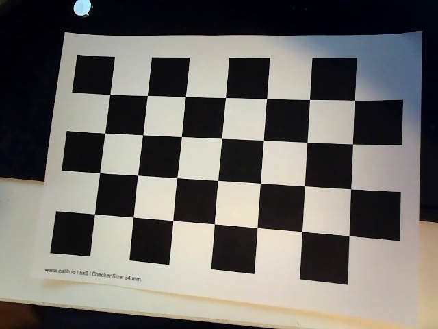
Sharp, the whole board in view, even light. This is what every photo should look like.
The board moved while the shutter was open. Still detected, but the corners are about 1 px off on average (and up to 4 px). Hold the board still, or rest it on something, when you press c.
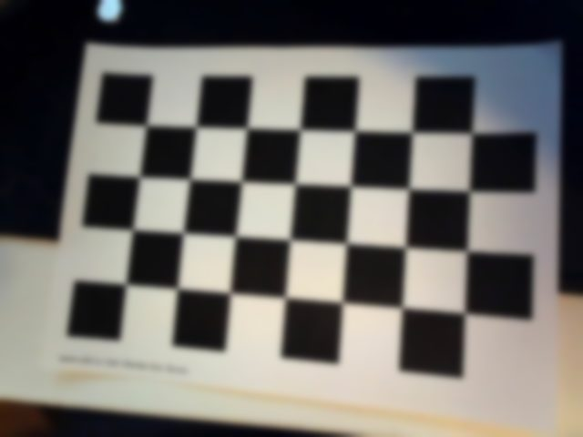
Too close for the lens, or autofocus hunting (constantly refocusing). Found, but the corners are about 0.3 px off, nearly the whole RMS error of a good calibration (0.35 px). Keep the board at a distance where it looks sharp, and lock the focus.

A light reflects off the paper and washes out some corners. Not found, so the photo is rejected. Tilt the board away from lamps and windows; matte paper helps.
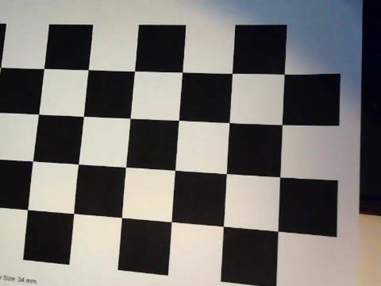
Part of the board is outside the frame. Not found with the chessboard (option A), so the photo is rejected. A ChArUco board (option B) still works here.
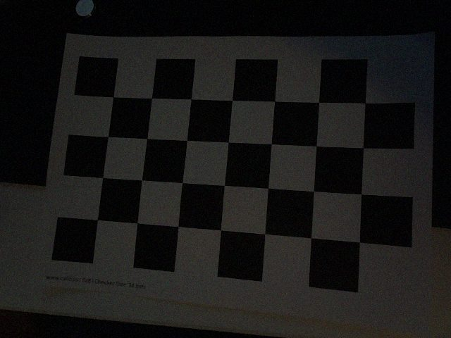
Dim and noisy, but still found, and the corners are only 0.1 px off. Light level matters much less than blur and glare.
Simulated from calibration_image_09. If one motion-blurred photo like this gets into the six samples, the RMS error rises from 0.354 to 0.54 px, and its own per-image error (1.02 px, compared with 0.2–0.6 px for the others) gives it away: check the per-image errors in section 3.4 and retake any photo that stands out.
Example: the six sample images
These ship with the repo in calibration_tutorial/intrinsic/sample_calibration_images/. The views are sharp, the whole board is visible and the tilts vary, all of which is good. But there are only six, and the board never reaches the image corners:
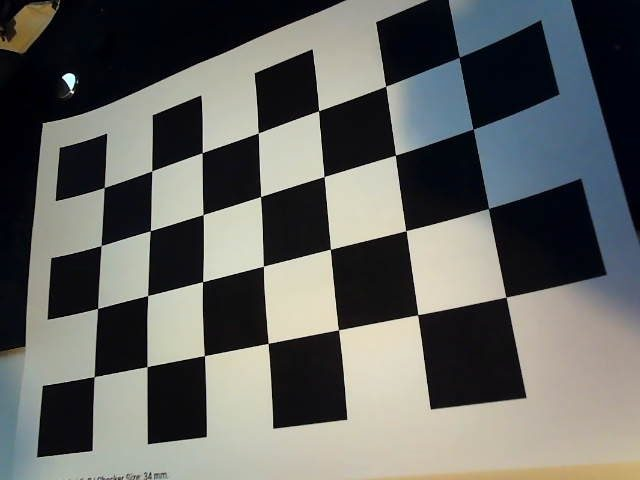
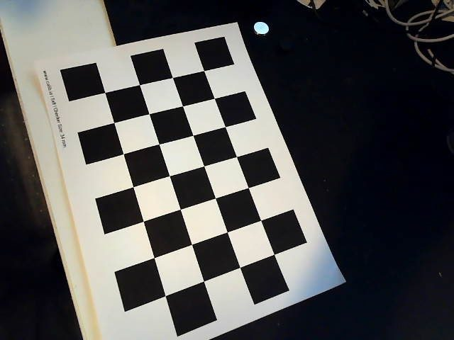
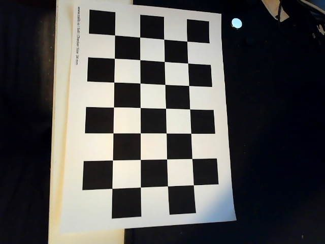
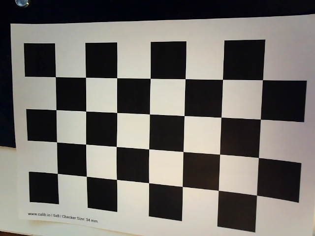
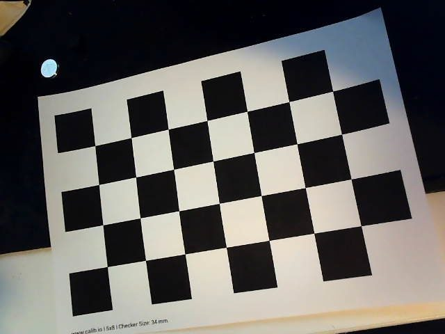
Aim for a coverage plot that fills the whole frame. While you capture, the green dots in the preview show the same thing (section 3.1); section 5.1 has a snippet that saves this plot for your own photos.
OpenCVtutorial: Interactive camera calibration application › Calibration process·tutorial: Create Calibration Pattern › Generic Recommendations·cv2.calibrateCamera
Set up
You can run this lab on your laptop (macOS, Windows or Linux) using its built-in webcam or a USB webcam.
Activate the lab environment, the same conda environment you use for the other COMP0241 labs, and check that OpenCV imports:
Terminalconda activate comp0241 python -c "import cv2; print(cv2.__version__)"Option A works with any OpenCV 4 or 5. Option B needs OpenCV 4.7 or newer (including OpenCV 5), which has the ArUco functions it uses; on an older version of OpenCV, the ChArUco script stops and tells you. If you see
ModuleNotFoundError, or a version below 4.7, install or update OpenCV inside the environment withpip install -U opencv-contrib-python.Get the code. The scripts are in the
calibration_tutorial/intrinsic/folder of the course repository. If you already cloned it, pull the latest version; otherwise clone it:Terminal · first timegit clone https://github.com/WeianWang-OvO/comp0241_26.git cd comp0241_26/calibration_tutorial/intrinsicTerminal · already clonedcd comp0241_26 git pull cd calibration_tutorial/intrinsicIf you were given the
.pyfiles on Moodle instead, put them together in one folder andcdinto it. You won't have the sample images then, so use your own photos.Check the folder. You should see:
calibration_tutorial/intrinsic/intrinsic/ ├── w3_calibration_cap.py capture photos with the keyboard (option A or B) ├── w3_calibration_gui.py capture photos in a window with buttons (section 3.2) ├── camera_names.py used by the window: the names of your cameras ├── w3_calibration.py option A: chessboard calibration and undistortion ├── w3_calibration_charuco.py option B: ChArUco calibration (and the optional fisheye model) ├── sample_calibration_images/ 6 example chessboard photos (for trying without a webcam) ├── sample_charuco_images/ 10 example ChArUco photos (option B) ├── sample_fisheye_images/ 18 rendered fisheye photos (optional, section 5.2) ├── docs/ this tutorial page (open docs/index.html in a browser) └── calibration_images/ created when you capture; the calibration reads from here
The scripts always look for calibration_images/ in the same folder as the script itself, so they work from any working directory and with VS Code's Run button. Their outputs (calibration_data.npz, undistorted_example.jpg) are also saved in that folder.
Capture and calibrate
Capture images
python w3_calibration_cap.pyA window called Calibration Capture shows the live camera feed. While the board is in view, its corners are drawn on the preview. The counter in the corner (“saved 3/17”) turns green, and small green dots mark the corners of the photos you have already saved, so you can see which parts of the frame still need covering. Click on the window first so that it receives your key presses, then:
| Key | Action |
|---|---|
| c | Save the current frame as calibration_images/calibration_image_NN.jpg, but only while the board's corners are drawn; otherwise it prints “No chessboard detected” |
| q or Esc | Quit |
Work through the shot list and the checklist of section 2.3: 17 photos. The saved photos are clean (without overlays): the corners and dots appear only in the preview.
| Option | Use it when |
|---|---|
python w3_calibration_cap.py 1 | Camera 0 is the wrong camera (an external webcam, or an iPhone via Continuity Camera on a Mac); also try 2 |
python w3_calibration_cap.py charuco | You use the ChArUco board (option B): it then waits for ChArUco corners instead, and accepts a board that is partly out of view |
Options can be combined in any order, e.g. python w3_calibration_cap.py 1 charuco. Here is what the script does:
Code · 2 partsFinding the board/Saving
def find_board(gray):
"""Return (found, corners) for the chosen board. A ChArUco board may be partly outside the frame."""
if use_charuco:
obj, corners, ids, _, _ = detect_board(gray)
return obj is not None, corners
return cv2.findChessboardCorners(gray, chessboard_size, flags=flags)Before saving, the script checks the frame for the board you chose. For the chessboard it uses findChessboardCorners with CALIB_CB_FAST_CHECK, which quickly rejects frames without a board so the preview stays smooth. For ChArUco it uses the same detector as w3_calibration_charuco.py.
OpenCVcv2.findChessboardCorners·tutorial: Camera calibration With OpenCV › Explanation·source: calibinit.cpp
if key in (ord(capture_key), ord(capture_key.upper())): # Capture and save the image
if found:
image_path = os.path.join(output_folder, f"calibration_image_{image_count:02d}.jpg")
if cv2.imwrite(image_path, frame):
image_count += 1
saved_count += 1
coverage.extend(corners.reshape(-1, 2))
print(f"Image saved: {os.path.relpath(image_path, script_dir)} ({saved_count}/{target})")
else:
print(f"Error: could not write {image_path} - check that the folder is writable.")
else:
print(f"No {'ChArUco board' if use_charuco else 'chessboard'} detected. Please adjust the position and try again.")A frame is saved only if the board is detected, and the script saves the raw camera frame rather than the annotated preview. Its corners are added to the green coverage dots.
Numbering continues after the photos already in the folder, so a second session adds to the first instead of overwriting it.
OpenCVtutorial: Camera Calibration › Setup·tutorial: Interactive camera calibration application › Calibration process
Run the script again: it prints how many earlier photos are in calibration_images/, shows their corners as green dots and carries on numbering. If you change camera or resolution, empty the folder first so that the calibration doesn't mix images from different setups.
Copy the sample images into calibration_images/ and skip to section 3.3. Empty the folder again before capturing your own photos (rm calibration_images/* on macOS or Linux; del calibration_images\* on Windows); otherwise your photos will be numbered after the samples and calibrated together with them.
mkdir -p calibration_images
cp sample_calibration_images/*.jpg calibration_images/mkdir calibration_images
copy sample_calibration_images\*.jpg calibration_images\Or capture in a window with buttons
An alternative to w3_calibration_cap.py: the same photos in the same folder, from a window that also shows where the board has been and a live estimate of the calibration result.
python w3_calibration_gui.pyPick your camera (the list shows the names your computer gives the cameras; Scan checks which ones produce images), the image size and the board you printed, then press Start. A photo is saved only when the board is found and has been still for half a second, and only once per position: move or tilt the board before the next one.
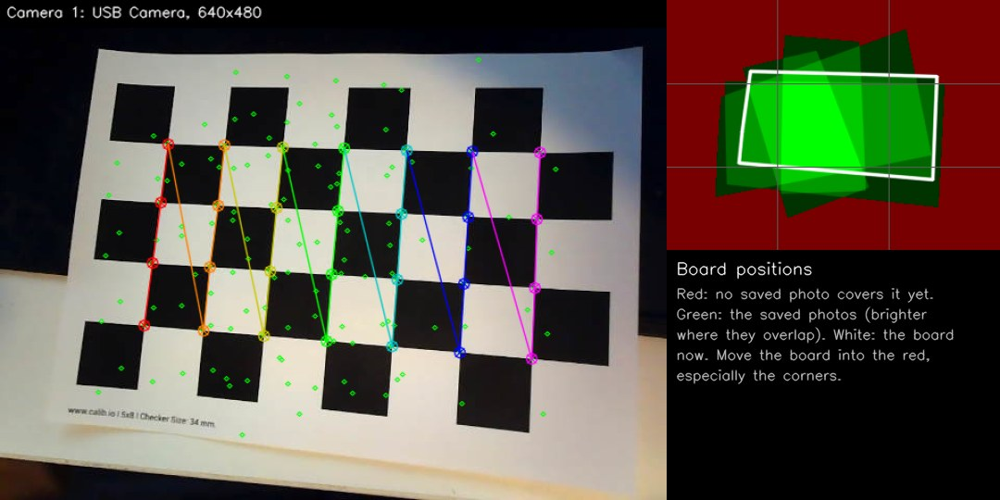
| In the window | What it shows or does |
|---|---|
| Green circles on the live image | The corners of the photos saved so far |
| Board positions panel | Every saved board filled in green, brighter where boards overlap; in red, the parts of the image that no photo covers yet; and the currently visible board as a white outline. Move the board into the red, especially the corners (section 2.3). A thin red band along the edges always remains, because the green covers only the area inside the board's corners: make it as thin as you can. A ChArUco board, which can extend past the frame edge, lets you shrink this band further. |
| Auto save | Saves automatically each time you hold the board still in a new position, so you can hold the board with both hands |
| Wait until still | On by default: a photo is saved only once the board has been still for half a second, so it is sharp; the status line shows how much it is moving. Untick it to save without this check (Auto save then saves each new position, at most once a second), and hold the board steady yourself |
| Estimate line | Once you have 4 photos, the window calibrates in the background and shows fx, fy, cx, cy and the RMS error, with the verdict of section 3.4. Watch the numbers settle as you add photos. |
| Undistorted | The live image corrected with that estimate (section 3.5) |
| Fisheye model | Optional: the estimate with the fisheye model of section 5.2; webcams don't need it |
| Key | Action |
|---|---|
| Space or c | Save a photo (the big button does the same) |
| u | Undo: delete the last photo this window saved in this folder (press again for the one before); earlier photos stay |
| q or Esc | Quit |
The photos go to calibration_images/, as with the capture script, so section 3.3 carries on unchanged. If you choose a different folder, w3_calibration.py won't find the photos there; for a ChArUco board, you can pass that folder path to python w3_calibration_charuco.py.
Code · 2 partsThe board-positions panel/The running estimate
def positions_panel(self, size, current):
"""Every saved board filled in green, brighter where boards overlap (as in OpenCV's interactive
calibration app), the parts no saved board has covered yet in red, and the board in view now as a
white outline."""
w, h = size
scale = 0.5
panel = np.zeros((int(h * scale), int(w * scale), 3), np.uint8)
covered = np.zeros(panel.shape[:2], np.uint8)
for view in self.views:
if view['size'] != size:
continue
fill = np.zeros_like(panel)
hull = cv2.convexHull((view['image'] * scale).astype(np.int32))
cv2.fillConvexPoly(fill, hull, (0, 255, 0), cv2.LINE_AA)
cv2.fillConvexPoly(covered, hull, 255)
panel = cv2.addWeighted(fill, 0.2, panel, 1.0, 0)
panel[covered == 0] = (0, 0, 120) # dark red: no board there yet, so the calibration knows nothing about it
if current is not None:
hull = cv2.convexHull((current['image'] * scale).astype(np.int32))
cv2.polylines(panel, [hull], True, (255, 255, 255), 2, cv2.LINE_AA)
# the image split in thirds: a calibration needs the board in each of the nine parts
for k in (1, 2):
cv2.line(panel, (int(k * panel.shape[1] / 3), 0), (int(k * panel.shape[1] / 3), panel.shape[0]), (90, 90, 90), 1)
cv2.line(panel, (0, int(k * panel.shape[0] / 3)), (panel.shape[1], int(k * panel.shape[0] / 3)), (90, 90, 90), 1)
return panelFor each saved photo, the outline of its corners (the convex hull) is filled in green on a black image at half size, and added with a weight of 0.2. Where boards overlap the green adds up, so well-covered parts are bright. The same outlines also go into a mask, covered, and every pixel outside all of them turns red: no photo has told the calibration anything about that part of the image yet.
The green fill is how OpenCV's interactive calibration application draws its board positions: its drawBoard does the same hull, fill and weighted add. The red shading for uncovered areas is this window's addition.
OpenCVcv2.addWeighted·based on: interactive calibration, frameProcessor.cpp
def calibrate(views, size, board, fisheye):
"""(K, D, rms) from the saved views, with the model the calibration script for this board uses:
k3 fixed for the chessboard (as in w3_calibration.py), free for ChArUco (as in w3_calibration_charuco.py),
or the optional fisheye model."""
obj = [v['object'].astype(np.float32) for v in views]
img = [v['image'].reshape(-1, 1, 2).astype(np.float32) for v in views]
if fisheye:
rms, K, D, _, _ = cv2.fisheye.calibrate(
[o.reshape(-1, 1, 3).astype(np.float64) for o in obj], [i.astype(np.float64) for i in img], size,
np.zeros((3, 3)), np.zeros((4, 1)), flags=cv2.fisheye.CALIB_RECOMPUTE_EXTRINSIC | cv2.fisheye.CALIB_FIX_SKEW,
criteria=(cv2.TERM_CRITERIA_COUNT + cv2.TERM_CRITERIA_EPS, 100, 1e-7))
else:
flags = cv2.CALIB_FIX_K3 if board == 'chessboard' else 0
rms, K, D, _, _ = cv2.calibrateCamera(obj, img, size, None, None, flags=flags, criteria=SOLVER)
return K, D, rmsThis runs the calibration from step 4 on the photos saved so far in a background thread so the window stays responsive. It uses the model the script for your board will use: k3 fixed for the chessboard, as w3_calibration.py does, and free for ChArUco, as w3_calibration_charuco.py does. With all the photos saved, it matches the result the script will print.
It allows up to 500 iterations (SOLVER), as w3_calibration_charuco.py does. w3_calibration.py keeps OpenCV's default of 30, which gives the same numbers on an ordinary webcam but can stop early on a wide-angle lens.
OpenCVcv2.calibrateCamera·cv2.fisheye.calibrate·tutorial: Interactive camera calibration application › Main application features
OpenCVtutorial: Interactive camera calibration application › Calibration process·source: apps/interactive-calibration
Run the calibration
python w3_calibration.pyThe script prints one line per photo, then how many were usable. A Chessboard window flashes through each photo with the detected corners drawn in colour, and each of these is saved next to the original as …_corners_detected.jpg (the next run ignores these files). Then the results are printed, and two windows show the original and the undistorted image; press any key in one of them to finish. On the six sample images, you get (without a display, the last line is omitted):
calibration_image_02.jpg: chessboard found
calibration_image_05.jpg: chessboard found
calibration_image_06.jpg: chessboard found
calibration_image_08.jpg: chessboard found
calibration_image_09.jpg: chessboard found
calibration_image_10.jpg: chessboard found
Chessboard found in 6 of 6 images (640x480)
WARNING: fewer than 10 views - the result will be unreliable (slide 9: capture 10-20)
Camera Matrix:
[[552.90384805 0. 362.66553508]
[ 0. 553.17026434 230.86274297]
[ 0. 0. 1. ]]
Distortion Coefficients:
[[ 0.03648159 -0.02245417 -0.00270735 -0.00039947 0. ]]
RMS re-projection error per image (px):
calibration_image_02.jpg: 0.608
calibration_image_05.jpg: 0.215
calibration_image_06.jpg: 0.220
calibration_image_08.jpg: 0.411
calibration_image_09.jpg: 0.234
calibration_image_10.jpg: 0.254
total error: 0.06112377076115629
RMS re-projection error: 0.3540 px
Undistorted image saved as undistorted_example.jpg (636x475)
Showing the original and undistorted images: press any key in one of the windows to finish (add nogui to skip the windows).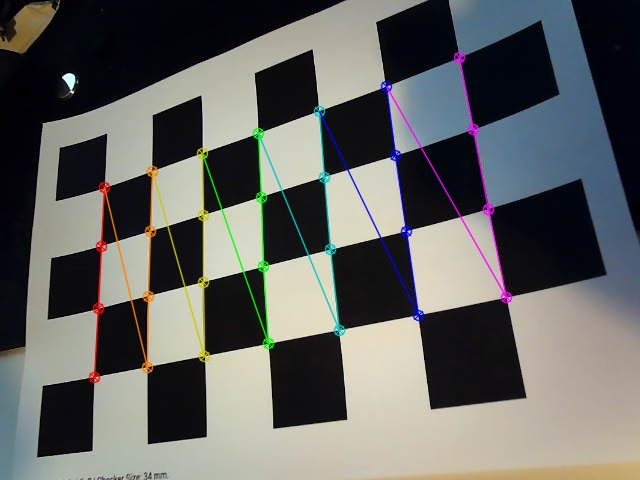
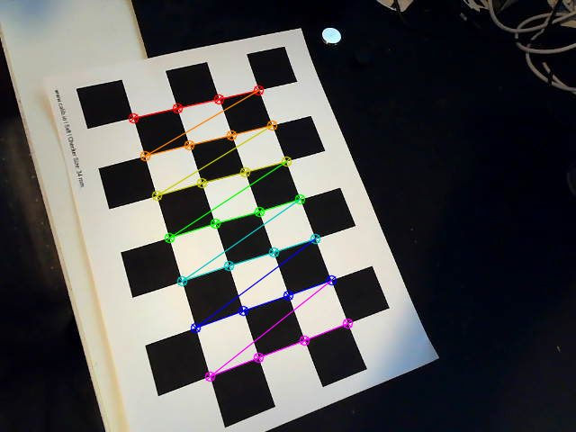
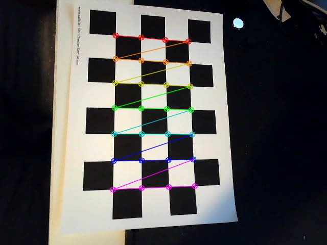
A photo marked chessboard NOT found - skipped is left out. That's fine if you still have 10 or more good ones; below 10 the script warns you, and below 3 it stops.
What the script does, step by step
Code · 4 partsStep 1 · The 3D points/Steps 2–3 · The 2D points/Checks before calibrating/Steps 4–6 · Calibrate and save
# Step 1: Prepare object points
# Define the chessboard size (number of internal corners)
chessboard_size = (4, 7) # INNER corners = (squares - 1) per direction; the calib.io 5x8-square board is (4, 7)
square_size = 34.0 # Edge of one printed square in mm. It only scales tvecs: K, distortion and errors do not depend on it
fix_k3 = True # Few views that do not reach the image corners cannot pin down k3, so keep it at 0
# Paths are relative to this script, so it works from any working directory (e.g. the VS Code Run button)
script_dir = os.path.dirname(os.path.abspath(__file__))
image_folder = os.path.join(script_dir, 'calibration_images')
# Windows need a display. Without one (e.g. over SSH), or with "nogui", pictures are only saved to files
show = 'nogui' not in [a.lower() for a in sys.argv[1:]] and (not sys.platform.startswith('linux')
or bool(os.environ.get('DISPLAY') or os.environ.get('WAYLAND_DISPLAY')))
# Prepare the object points for a standard chessboard
objp = np.zeros((chessboard_size[0] * chessboard_size[1], 3), np.float32)
objp[:, :2] = np.mgrid[0:chessboard_size[0], 0:chessboard_size[1]].T.reshape(-1, 2)
objp *= square_sizeThe board defines the world coordinate system: its first inner corner is the origin and the board lies in the plane \(Z = 0\). objp lists the 28 corners as (0,0,0), (34,0,0), (68,0,0), (102,0,0), (0,34,0), … in millimetres. These are the “3D coordinates in real-world space” of slide 10, the same for every photo.
fix_k3 = True keeps the sixth-order distortion term at zero; section 4.1 shows why. show is False when there is no display (e.g. over SSH) or when you pass nogui; the images are then saved to files without opening any windows.
OpenCVbased on: Camera Calibration › Setup·sample: calibrate.py
# Step 2: Load calibration images (the captures only, not the *_corners_detected overlays written below)
images = sorted(f for f in glob.glob(os.path.join(image_folder, '*'))
if f.lower().endswith(('.jpg', '.jpeg', '.png')) and '_corners_detected' not in os.path.basename(f))
if not images:
sys.exit(f"No images found in {image_folder}\n"
"Run w3_calibration_cap.py first, or copy the files from sample_calibration_images/ into calibration_images/.")
for fname in images:
name = os.path.basename(fname)
img = cv2.imread(fname)
if img is None:
print(f"{name}: cannot be read - skipped")
continue
gray = cv2.cvtColor(img, cv2.COLOR_BGR2GRAY)
# Step 3: Find the chessboard corners, then refine them to sub-pixel accuracy
ret, corners = cv2.findChessboardCorners(gray, chessboard_size, None)
if not ret:
print(f"{name}: chessboard NOT found - skipped")
continue
corners = cv2.cornerSubPix(gray, corners, (5, 5), (-1, -1), criteria)
detections.append((fname, gray.shape[::-1], corners))
print(f"{name}: chessboard found")
# Optional: Draw and display the corners for visualization
cv2.drawChessboardCorners(img, chessboard_size, corners, ret)
if show:
cv2.imshow('Chessboard', img)
cv2.waitKey(500)
root, ext = os.path.splitext(fname)
cv2.imwrite(root + '_corners_detected' + ext, img)
if show:
cv2.destroyAllWindows()The script reads every .jpg, .jpeg or .png in the folder, except its own _corners_detected overlays.
findChessboardCorners locates the 28 corners and refines them slightly in a 5 × 5-pixel window; because a true corner rarely lands on an exact integer pixel, cornerSubPix refines each one to sub-pixel accuracy using the image intensity gradients in an 11 × 11-pixel window ((5, 5) is the half-width). The corners come out in a fixed order that matches objp: these are the 3D–2D pairs required by slide 8.
OpenCVcv2.findChessboardCorners·cv2.cornerSubPix·based on: Camera Calibration › Setup·source: calibinit.cpp
# All views must come from one camera at one resolution: keep the most common image size
image_size = Counter(size for _, size, _ in detections).most_common(1)[0][0]
for fname, size, corners in detections:
if size != image_size:
print(f"{os.path.basename(fname)}: size {size} differs from {image_size} - skipped")
continue
objpoints.append(objp) # Add object points
imgpoints.append(corners) # Add image points
used_files.append(fname)
print(f"\nChessboard found in {len(objpoints)} of {len(images)} images ({image_size[0]}x{image_size[1]})")
if len(objpoints) < 3:
sys.exit("At least 3 views are needed. Capture more images with the whole board visible.")
if len(objpoints) < 10:
print("WARNING: fewer than 10 views - the result will be unreliable (slide 9: capture 10-20)")All photos must come from one camera at one resolution, because K is in pixels. Photos of another size are skipped with a message. The script then needs at least 3 usable photos and warns below the 10 that slide 9 asks for.
# Step 4: Perform camera calibration (ret = RMS re-projection error in pixels, the formula on slide 10)
flags = cv2.CALIB_FIX_K3 if fix_k3 else 0
ret, camera_matrix, dist_coeffs, rvecs, tvecs = cv2.calibrateCamera(objpoints, imgpoints, image_size, None, None,
flags=flags)
# Step 5: Display results
print("Camera Matrix:\n", camera_matrix)
print("\nDistortion Coefficients:\n", dist_coeffs)
# Step 6: Save the calibration results
np.savez(os.path.join(script_dir, 'calibration_data.npz'), camera_matrix=camera_matrix, dist_coeffs=dist_coeffs,
rvecs=rvecs, tvecs=tvecs, image_size=image_size, rms=ret)This one call does the actual work using Zhang's method (the standard algorithm for solving camera intrinsics from multiple views of a flat pattern). It finds the K, distortion coefficients and board poses that make the projected objpoints land as close as possible to the detected imgpoints. image_size is (width, height).
The results go into calibration_data.npz next to the script, with the image size and the RMS error, so you can reuse them later (section 5.1).
OpenCVcv2.calibrateCamera·based on: Camera Calibration › Calibration·source: calibration.cpp
The outputs of cv2.calibrateCamera
| Output | Kind | What it is | Sample images |
|---|---|---|---|
retval (the script calls it ret) | Quality | RMS reprojection error over all corners, in pixels (section 3.4); printed as RMS re-projection error: … px | 0.354 px |
cameraMatrix | Intrinsic | The 3 × 3 matrix K: \(f_x, f_y, c_x, c_y\) in pixels | f ≈ 553 px |
distCoeffs | Intrinsic | \((k_1, k_2, p_1, p_2, k_3)\) | 1 × 5 |
rvecs | Extrinsic | One rotation per photo, as a 3-vector (axis–angle representation; cv2.Rodrigues converts it to a 3 × 3 rotation matrix R): how the board was turned relative to the camera | 6 × (3, 1) |
tvecs | Extrinsic | One translation per photo: where the board's origin was, in camera coordinates, in the units of square_size (here mm) | z = 273–390 mm |
rvecs and tvecs are not part of the camera matrix: they are the extrinsics, one board pose per photo, as in the table above.
Option B: run the ChArUco calibration
Capture with python w3_calibration_cap.py charuco, then:
python w3_calibration_charuco.pyIt reads calibration_images/ next to the script. To try it first on the 10 ChArUco photos in sample_charuco_images/ (taken with an iPhone and resized to 756 × 756), pass that folder as an argument:
python w3_calibration_charuco.py sample_charuco_imagesresized_IMG_9853.jpg: 24 of 24 corners
…
resized_IMG_9862.jpg: 24 of 24 corners
Used 10 of 10 photos, image size (756, 756)
Camera Matrix:
[[769.92079367 0. 386.23087411]
[ 0. 772.35691993 376.65597245]
[ 0. 0. 1. ]]
Distortion Coefficients:
[ 4.07316573e-01 -3.18077223e+00 -1.74548075e-04 4.08808768e-03
8.59113494e+00]
RMS reprojection error (px): 0.3854411840842758
Per-photo RMS (px):
resized_IMG_9853.jpg: 0.348
…Code · 1 partWhat changes from option A
corners, ids, marker_corners, marker_ids = detector.detectBoard(gray)
if ids is None or len(ids) < MIN_CORNERS:
return None, None, None, marker_corners, marker_ids
obj, img = board.matchImagePoints(corners, ids) # each corner's 3D position on the board, found by its IDdetectBoard reads the markers, then finds the chessboard corners between them, each with its ID. matchImagePoints looks up each ID's position on the board, giving the same 3D–2D pairs as objp and corners in option A, but only for the corners that were seen. Those go into the same cv2.calibrateCamera call.
OpenCVCharucoDetector.detectBoard·Board.matchImagePoints·based on: Detection of ChArUco Boards › ChArUco Board Detection·source: charuco_detector.cpp
Like the option-A script, it prints the RMS error and the per-photo errors, skips photos of a different size, and works from any folder; its overlays go to charuco_detections/.
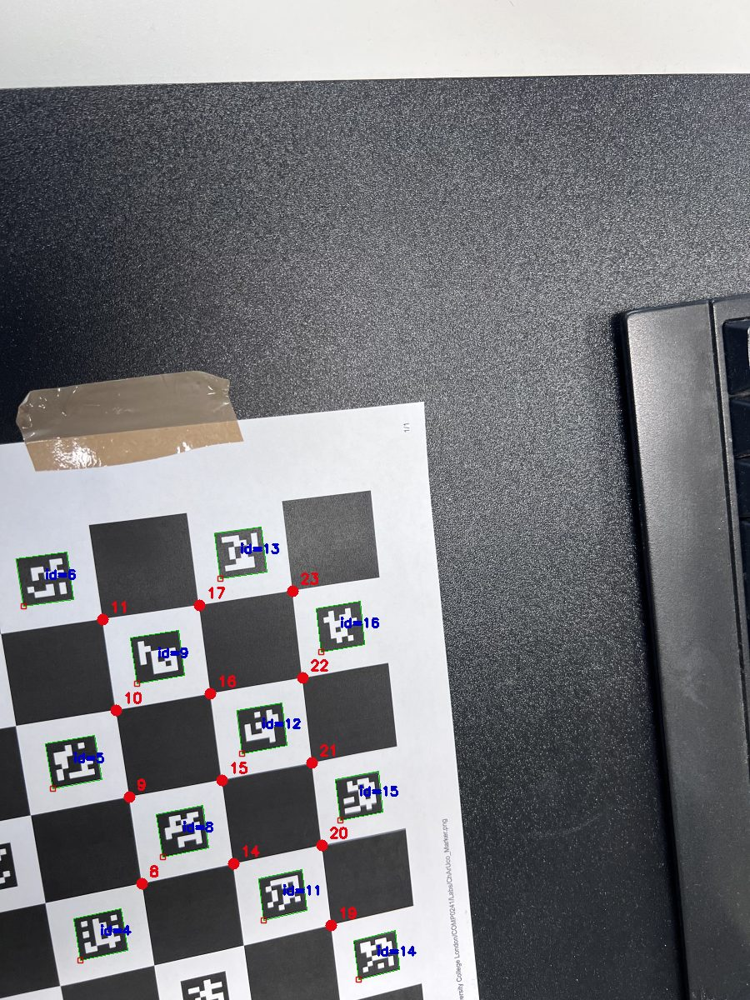
On 11 photos with part of the board out of view, the ChArUco detector finds 5–22 corners in every photo, while the chessboard detector finds its grid in only 2 of them. That is the point of option B: views like this can push the board into the corners of the image. The cost is sharpness: on blurred photos some views yield only 4 of 24 corners, because the markers can no longer be read.
The ten repo photos all show the whole board in the middle of the frame. The RMS error is a good 0.39 px, yet the distortion coefficients are wild (k₂ = −3.2, k₃ = 8.6), because nothing constrains the edges of the image. With your own photos, use what option B makes possible: let the board extend past the frame edges so the detected corners reach the image corners.
Reprojection error
How do you know whether the calibration is any good? Take the estimated parameters, project the known 3D board corners back into each photo with cv2.projectPoints, and measure how far they land from the corners that were actually detected. Taking the root-mean-square (RMS) distance over all \(N\) corners in all photos gives:
Each corner contributes a small error vector. Below, they are drawn magnified on top of the photo, because at their true size (a fraction of a pixel) they would be invisible.
What does the script print?
Code · 1 partThree error numbers
# Re-projection error (printed before the undistortion demo, so it is never lost)
mean_error = 0
print("\nRMS re-projection error per image (px):")
for i in range(len(objpoints)):
imgpoints2, _ = cv2.projectPoints(objpoints[i], rvecs[i], tvecs[i], camera_matrix, dist_coeffs)
error = cv2.norm(imgpoints[i].reshape(-1, 2), imgpoints2.reshape(-1, 2), cv2.NORM_L2) / len(imgpoints2)
mean_error += error
print(f" {os.path.basename(used_files[i])}: {error * np.sqrt(len(imgpoints2)):.3f}")
print("total error: {}".format(mean_error / len(objpoints))) # OpenCV-tutorial metric: about RMS / sqrt(corners per image)
print(f"RMS re-projection error: {ret:.4f} px")The per-image lines are each photo's RMS error. The last line, RMS re-projection error, is ret from calibrateCamera: exactly the formula of slide 10. This is the number to report.
“total error” is the line from the official OpenCV tutorial, which slide 13 also shows. cv2.norm(…, NORM_L2) is \(\sqrt{\sum \lVert e\rVert^2}\) for one photo; dividing it by the photo's 28 corners, instead of putting the 28 inside the square root, makes it at least \(\sqrt{28} \approx 5.3\) times smaller than the RMS error (5.8 times on the samples: 0.061 against 0.354 px). Older versions of the OpenCV tutorial computed it the same way; the current version squares the norms and takes a square root.
OpenCVcv2.projectPoints·cv2.norm·based on: Camera Calibration › Re-projection Error (its older form)
| RMS error | Verdict for a 640 × 480 webcam |
|---|---|
| < 0.5 px | Good |
| 0.5–1 px | Usable; look for blurry or badly detected photos and retake them |
| > 1 px | Something is wrong: a curled board, motion blur, mixed resolutions or cameras |
A low error shows that the model fits your photos. It cannot tell you about parts of the image your photos never covered, or about a focal length your views cannot pin down: in section 2.3, 17 centre-facing photos give an RMS error as small as the shot list's, yet a focal length that is up to 45 px off.
Undistort an image
Now use the calibration. Undistortion bends curved lines back to straight, but this has a side effect: the corrected image no longer fills a rectangle neatly. You choose how to deal with that through cv2.getOptimalNewCameraMatrix and its alpha parameter:
- alpha = 0: zoom in until every pixel is valid. No black borders, but you lose some of the field of view.
- alpha = 1: keep every pixel of the original. You see the whole field of view, with curved black borders around it.
The function also returns roi (region of interest), the largest rectangle within the result that contains only valid pixels.
Code · 1 partStep 7 · Undistort
# Step 7: Use the calibration results to undistort an image
img = cv2.imread(used_files[0]) # Replace with an image to undistort (same camera, same resolution)
h, w = img.shape[:2]
new_camera_matrix, roi = cv2.getOptimalNewCameraMatrix(camera_matrix, dist_coeffs, (w, h), 1, (w, h))
# Undistort the image
undistorted_img = cv2.undistort(img, camera_matrix, dist_coeffs, None, new_camera_matrix)
# Crop the image (optional, based on ROI), unless the valid region is tiny (over-fitted distortion model)
x, y, rw, rh = roi
if rw * rh >= 0.3 * w * h:
undistorted_img = undistorted_img[y:y+rh, x:x+rw]
else:
print("WARNING: the valid region after undistortion is tiny - capture more views that reach the image corners")The script undistorts the first photo it used (calibration_image_02 for the samples). getOptimalNewCameraMatrix uses alpha = 1 (the 4th argument); the 5th argument is the output size. cv2.undistort does the undistortion, and the result is cropped to the ROI, so the window shows only valid pixels at the alpha = 1 scale.
If the ROI covers less than 30% of the frame, the distortion model is over-fitted (section 4.1): the script then shows the uncropped image and warns you. The result is also saved as undistorted_example.jpg.
OpenCVcv2.getOptimalNewCameraMatrix·cv2.undistort·based on: Camera Calibration › Undistortion·source: undistort.dispatch.cpp
With this webcam, the change is subtle: switch between the original and alpha = 0 and watch the edges of the board and the frame. With a wide-angle or fisheye lens it is dramatic (slide 2).
Undistorting one of the calibration photos is a quick check. A stronger test is a new photo, taken with the same camera at the same resolution (slide 11), of something with long straight lines near the edges of the frame, like a door frame, a bookshelf or window blinds. Save it next to the scripts as test.jpg (not in calibration_images/, or it will be used for calibration too) and change the cv2.imread line of step 7 to img = cv2.imread(os.path.join(script_dir, 'test.jpg')).
Check your result
Read your result
Compare your numbers with these two reference results: the one on slide 13 (labelled “a not very good one!”) and the six sample images in the repo. Both are 640 × 480 images. Your image size is printed in the line “Chessboard found in … images (W×H)”. If OpenCV opened your camera at 1280 × 720 or 1920 × 1080 (common on MacBooks), your f will be much larger and the principal point should be near (W/2, H/2), e.g. (640, 360).
| Quantity | Slide 13 | Sample images | Sanity check |
|---|---|---|---|
| \(f_x\), \(f_y\) (px) | 557.57, 557.54 | 552.90, 553.17 | Nearly equal → square pixels ✓ |
| \(c_x\), \(c_y\) (px) | 361.16, 226.58 | 362.67, 230.86 | Near the image centre (W/2, H/2) = (320, 240); webcams are often tens of pixels off ✓ |
| \(k_1\) | 0.0238 | 0.0365 | Slide 13: k₂ and k₃ are large with opposite signs, a sign of over-fitting (check 3). The script keeps k₃ = 0 |
| \(k_2\) | 0.0966 | −0.0225 | |
| \(k_3\) | −0.3703 | 0 (fixed) | |
| \(p_1\), \(p_2\) | −0.0031, −0.0017 | −0.0027, −0.0004 | Tiny → lens well aligned ✓ |
| Printed “total error” | 0.0739 | 0.0611 | Not the RMS (section 3.4) |
RMS error (ret) | not shown | 0.354 px | < 0.5 px ✓ |
Four checks you can do yourself
Field of view. From \(f_x\) and the image width \(W\), the horizontal field of view is \(\text{HFOV} = 2\arctan\!\big(\tfrac{W}{2 f_x}\big)\). For the samples, \(2\arctan(320/553) \approx 60^\circ\) horizontally and \(\approx 47^\circ\) vertically, typical for a laptop webcam. If you get 10° or 150°, something is wrong.
Distances. The third component of each
tvecis the depth of the board's first corner along the camera's viewing axis, roughly how far away the board was. In the samples it is 273–390 mm, which matches holding a board at arm's length. If your distances look wrong by a constant factor, checksquare_size.Over-fitting. Just like fitting a high-degree polynomial to points clustered in the middle, when too few photos reach the image corners, k₂ and k₃ can grow large with opposite signs and cancel each other out in the centre while oscillating wildly towards the edges — which is why the script sets
fix_k3 = True. Tryfix_k3 = Falseon the samples: the RMS error barely changes (0.354 → 0.351 px), but k₂ jumps to 0.32 and k₃ to −0.76, and the alpha = 1 ROI shrinks from 636 × 475 to 543 × 415, because the over-fitted polynomial bends back before it reaches the image corners. Slide 13's coefficients show the same signature. Judge a calibration by its RMS error and its undistorted picture, not by the individual coefficients.Why “not very good”? Slide 13's large, opposite-signed k₂ and k₃ (check 3) point to the usual causes: too few photos, and a board that never reaches the corners of the frame. The sample images have both (coverage plot in section 2.3). The distortion near the edges is then extrapolated rather than measured, even when the RMS error looks good. Taking more photos with the board near the edges fixes both issues.
OpenCVcv2.calibrationMatrixValues·cv2.calibrateCamera·calib3d reference › radial distortion must be monotonic
Troubleshooting
| Message or symptom | Likely cause | Fix |
|---|---|---|
Error: Unable to access camera 0 | Wrong camera index, camera used by another app (Zoom, Teams), or no permission | Close other apps; try python w3_calibration_cap.py 1. On macOS, allow access for your terminal or VS Code under System Settings → Privacy & Security → Camera, then restart it |
| Keys do nothing in the capture window | The OpenCV window doesn't have keyboard focus | Click on the video window, then press c / q |
c prints No chessboard detected | Board partly outside the frame, glare or blur, or chessboard_size doesn't match your board; or you are holding a ChArUco board without the charuco option | Keep the whole board in view; improve the lighting; count inner corners (section 2.2) and set the same chessboard_size in both scripts |
No images found in …/calibration_images | Nothing captured yet, or the photos aren't .jpg, .jpeg or .png | Capture first (section 3.1), or copy the sample images |
No (4, 7) chessboard found in N images | chessboard_size counts squares instead of inner corners, or the photos don't show the whole board | Count inner corners (section 2.2) |
WARNING: fewer than 10 views | Too few usable photos for a reliable result | Capture more, following the checklist (section 2.3) |
… size (W, H) differs from … - skipped | Photos from two cameras or resolutions in one folder | Empty calibration_images/ and capture again with one camera |
WARNING: the valid region after undistortion is tiny | The distortion model is over-fitted, usually because no photo reaches the image corners | Capture views with the board near the edges; keep fix_k3 = True |
| RMS error above 1 px | Curled or warped board, motion blur, photos from different resolutions or cameras | Stiffen the board, retake blurry photos, keep one camera and resolution |
cv2.error: … The function is not implemented at imshow | A headless OpenCV package is installed (alone or next to another OpenCV package); it has no GUI support | Remove every OpenCV package, then install one: pip uninstall -y opencv-python opencv-python-headless opencv-contrib-python opencv-contrib-python-headless, then pip install opencv-contrib-python. They share one cv2 folder, so removing only one can break the others |
| Option B: every photo says “not enough corners, skipped” | The settings at the top of the script don't match your print (squares, dictionary), the photos are blurry, or the markers are too small in the image | Check the board settings; move closer; hold still and use good light |
OpenCVcv2.VideoCapture·cv2.findChessboardCorners·CharucoDetector.detectBoard
Check yourself
Q1Your board has 9 × 6 squares. What should chessboard_size be?
(8, 5) (or (5, 8)): one fewer than the number of squares in each direction, because OpenCV counts inner corners.
Q2Which outputs of calibrateCamera describe the camera, and which describe each photo?
Camera (intrinsic): cameraMatrix and distCoeffs. Each photo (extrinsic): rvecs[i] and tvecs[i], the board's pose in photo i. retval is the RMS reprojection error.
Q3You change square_size from 34.0 to 1.0. What changes in the output?
Only tvecs, which become 34 times smaller (now measured in “squares” instead of millimetres). K, the distortion coefficients, the rotations and the error stay exactly the same. Scaling the whole world doesn't change how the image looks.
Q4\(f_x = 550\) px for a 640-pixel-wide image. What is the horizontal field of view?
\(2\arctan(320/550) \approx 60^\circ\).
Q5Why do you need photos with the board near the corners of the image?
Distortion grows with \(r^2, r^4, r^6\), so it is largest in the corners. Without corners detected there, the coefficients are only extrapolated from the centre, and the correction near the edges can be wrong even when the RMS error looks small.
Q6You calibrated at 640 × 480. Can you use the same K for 1280 × 720 video from the same webcam?
Not directly. K is in pixels, and 1280 × 720 is not just a 2× scale of 640 × 480: it has a different aspect ratio (16:9 vs 4:3), so the sensor is cropped differently. Calibrate at the resolution you will use.
Q7What is the difference between alpha = 0 and alpha = 1 in getOptimalNewCameraMatrix?
alpha = 0 zooms in so every output pixel is valid (no black border, less field of view). alpha = 1 keeps every input pixel (full field of view, black curved borders). Values in between blend the two.
Q8After calibrating, a friend refocuses the webcam. Is your calibration still valid?
No. Focus (and zoom) change the effective focal length and the distortion, so you need to recalibrate. That is why slide 9 says to lock these settings.
Q9The script prints “total error: 0.061” and “RMS re-projection error: 0.3540 px”. Which one is the error of slide 10?
The RMS line: it is ret from calibrateCamera, the slide-10 formula. “total error” divides by the number of corners outside the square root, which makes it at least √28 times smaller (section 3.4).
Going further
Optional experiments
Try these optional experiments one at a time and watch how the printed RMS error changes.
1 · The effect of sub-pixel refinement
Put a # in front of the cornerSubPix line in step 3 and run the sample images again. The RMS error rises from 0.354 to 0.437 px, and one corner of image 02 ends up 3 px off. (Option B needs no extra step: the ChArUco detector refines its corners itself.)
2 · Leave k₃ free
Set fix_k3 = False at the top of w3_calibration.py. On the sample images, the RMS error hardly changes, but the coefficients and the undistorted image change noticeably (section 4.1, check 3).
3 · Save your coverage plot
The green dots in the capture preview show where your corners are. To save the same plot as a picture for your report, add this just above # Step 4: Perform camera calibration; it writes coverage.png next to the script:
CodeAdd above # Step 4
coverage = np.full((image_size[1], image_size[0], 3), 255, np.uint8)
for pts in imgpoints:
for u, v in pts.reshape(-1, 2):
cv2.circle(coverage, (int(u), int(v)), 3, (0, 0, 0), -1)
cv2.imwrite(os.path.join(script_dir, 'coverage.png'), coverage)OpenCVtutorial: Interactive camera calibration application › Calibration process
4 · Reuse your calibration on live video
Save this as undistort_live.py next to the scripts. It loads calibration_data.npz, or calibration_data_charuco.npz if you add charuco, and shows the camera undistorted next to the original. Give it the same camera index you captured with, e.g. python undistort_live.py 1 charuco. Press q to quit. It requires a display and a webcam that VideoCapture can open.
Codeundistort_live.py
import os
import sys
import cv2
import numpy as np
# Same options as w3_calibration_cap.py: a camera index (e.g. 1), and "charuco" for the option-B result
args = [a.lower() for a in sys.argv[1:]]
camera_index = next((int(a) for a in args if a.isdigit()), 0)
name = 'calibration_data_charuco.npz' if 'charuco' in args else 'calibration_data.npz'
here = os.path.dirname(os.path.abspath(__file__))
data = np.load(os.path.join(here, name))
K, D = data['camera_matrix'], data['dist_coeffs']
w, h = (int(v) for v in data['image_size'])
new_K, roi = cv2.getOptimalNewCameraMatrix(K, D, (w, h), 0, (w, h))
map1, map2 = cv2.initUndistortRectifyMap(K, D, None, new_K, (w, h), cv2.CV_16SC2)
cap = cv2.VideoCapture(camera_index)
failed_reads = 0
while True:
ok, frame = cap.read()
if not ok:
failed_reads += 1
if failed_reads < 10: # a camera that is warming up can drop a few frames
continue
print(f"No picture from camera {camera_index}. Use the index you captured with, e.g. python undistort_live.py 1")
break
failed_reads = 0
if frame.shape[:2] != (h, w):
raise SystemExit(f"The camera gives {frame.shape[1]}x{frame.shape[0]}, but you calibrated at {w}x{h}.")
undistorted = cv2.remap(frame, map1, map2, cv2.INTER_LINEAR)
cv2.imshow('Original | Undistorted (alpha = 0)', np.hstack([frame, undistorted]))
if cv2.waitKey(1) & 0xFF == ord('q'):
break
cap.release()
cv2.destroyAllWindows()OpenCVcv2.getOptimalNewCameraMatrix·cv2.initUndistortRectifyMap·cv2.remap·based on: Camera Calibration › 2. Using remapping
This computes the undistortion maps once with initUndistortRectifyMap and applies them to every frame with remap. That gives the same result as cv2.undistort, but is much faster for video. It stops if the camera's resolution differs from the one you calibrated at, because K would not fit.
5 · Looking ahead: stereo calibration
Stereo calibration finds where a second camera sits relative to the first: the rotation R and translation T between them. You calibrate each camera on its own first, exactly as in this lab, then photograph the board with both cameras at the same time. cv2.stereoCalibrate needs the same corners in both images of a pair. With a chessboard (option A) that means the whole board in both views at once. With ChArUco (option B) you match corners by ID and use whichever ones both cameras saw:
The stereo calibration lab does all of this with two USB webcams: capture pairs, calibrate, rectify and measure depth. The sketch below shows the core idea.
Codestereo_sketch.py
import cv2
import numpy as np
from w3_calibration_charuco import detect_board # the option B detector
def matched_points(gray_left, gray_right, min_common=6):
"""Board points and pixels of the corners BOTH cameras saw, in the same order."""
obj_l, img_l, ids_l, _, _ = detect_board(gray_left)
obj_r, img_r, ids_r, _, _ = detect_board(gray_right)
if ids_l is None or ids_r is None:
return None
common = np.intersect1d(ids_l.ravel(), ids_r.ravel())
if len(common) < min_common:
return None
pick_l = [np.flatnonzero(ids_l.ravel() == i)[0] for i in common]
pick_r = [np.flatnonzero(ids_r.ravel() == i)[0] for i in common]
return obj_l[pick_l], img_l[pick_l], img_r[pick_r]
# K1, D1 and K2, D2: each camera calibrated on its own first (option B).
# pairs: list of (gray_left, gray_right) photos taken at the same moment.
obj, img_left, img_right = [], [], []
for gray_left, gray_right in pairs:
m = matched_points(gray_left, gray_right)
if m is not None:
obj.append(m[0])
img_left.append(m[1])
img_right.append(m[2])
rms, K1, D1, K2, D2, R, T, E, F = cv2.stereoCalibrate(
obj, img_left, img_right, K1, D1, K2, D2, image_size, flags=cv2.CALIB_FIX_INTRINSIC)
print("stereo RMS (px):", rms, " baseline (mm):", np.linalg.norm(T))OpenCVcv2.stereoCalibrate·CharucoDetector.detectBoard·sample: stereo_calib.cpp
In a simulated example with two 640 × 480 cameras 60 mm apart and 14 board poses (many near the edges of the frame), ChArUco yields usable pairs for all 14 poses, whereas both cameras see the whole board in only 3. stereoCalibrate recovers the baseline (the distance between the two cameras) as 60.2 mm, and after cv2.stereoRectify matching corners lie on the same image row to within 0.3 px.
Optional: a fisheye lens
For completeness only: the lab doesn't require this, and a standard webcam isn't a fisheye lens. Lenses wider than about 120° (action cameras, some robot and car cameras) bend straight lines so strongly that the model in section 1.4 can only approximate them roughly. That model works with \(\tan\theta\), where \(\theta\) is a ray's angle from the optical axis, and \(\tan\theta\) grows without limit as \(\theta\) nears 90°. OpenCV's cv2.fisheye module uses a polynomial in the angle itself instead (the model of Kannala and Brandt):
Here \(r\) is a point's distance from the principal point in pixels: the four coefficients \(k_1 \ldots k_4\) replace the five of the standard model.
To try it without a fisheye lens, use the 18 rendered photos in sample_fisheye_images/: a virtual 1280 × 800 camera with a horizontal field of view of about 137°, photographing the option B ChArUco board. Because the photos are rendered, the true values are known (true_values.txt). From the w3_calibration folder, calibrate with the fisheye model, then with the standard one:
python w3_calibration_charuco.py sample_fisheye_images fisheyepython w3_calibration_charuco.py sample_fisheye_images| fx (px) | cx (px) | RMS error (px) | |
|---|---|---|---|
| True values | 520.0 | 644.0 | – |
| Fisheye model | 520.1 | 644.1 | 0.03 |
| Standard model | 539.4 | 634.7 | 0.88 |
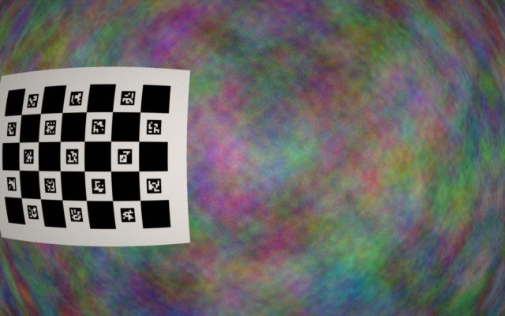
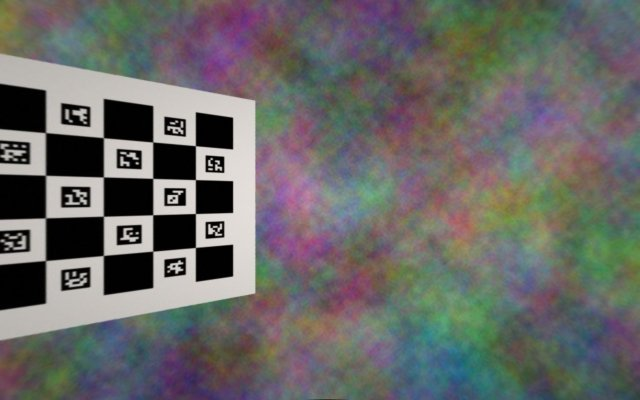
Runs on this folder save their results as calibration_data_fisheye_sample_fisheye_images.npz and calibration_data_charuco_sample_fisheye_images.npz, so they never replace your own calibration. A fisheye result needs the fisheye functions: cv2.fisheye.undistortImage or cv2.fisheye.initUndistortRectifyMap, not cv2.undistort. In the capture window (section 3.2), tick Fisheye model to see the running estimate with this model.
Code · 2 partsCalibrating with the fisheye model/Undistorting a fisheye photo
def calibrate_fisheye(objpoints, imgpoints, image_size):
"""Optional: calibrate with OpenCV's fisheye model (cv2.fisheye) instead of the standard one.
A fisheye lens maps a ray at angle theta from the optical axis to the radius r = f * theta_d, with
theta_d = theta (1 + k1 theta^2 + k2 theta^4 + k3 theta^6 + k4 theta^8) (Kannala and Brandt, 2006).
The standard model works with tan(theta) instead, which grows without limit as theta nears 90 degrees.
Returns the same five values as cv2.calibrateCamera; D then holds k1..k4.
"""
obj = [o.reshape(-1, 1, 3).astype(np.float64) for o in objpoints] # cv2.fisheye wants N x 1 x 3 (refuses N x 3)
img = [i.reshape(-1, 1, 2).astype(np.float64) for i in imgpoints]
flags = cv2.fisheye.CALIB_RECOMPUTE_EXTRINSIC | cv2.fisheye.CALIB_FIX_SKEW
criteria = (cv2.TERM_CRITERIA_COUNT + cv2.TERM_CRITERIA_EPS, 100, 1e-7)
try:
return cv2.fisheye.calibrate(obj, img, image_size, np.zeros((3, 3)), np.zeros((4, 1)),
flags=flags, criteria=criteria)
except cv2.error as error:
sys.exit(f"The fisheye calibration failed: {str(error).strip().splitlines()[-1]}\n"
"Use more photos, with the board in every part of the image, and leave out very tilted views.")This uses the same photos and corners as the standard calibration. cv2.fisheye.calibrate expects each photo's board points as an N × 1 × 3 array and its image points as N × 1 × 2; it refuses a flat N × 3 array, hence the reshapes. CALIB_RECOMPUTE_EXTRINSIC re-estimates the board poses after each step of the solver, and CALIB_FIX_SKEW holds the fisheye model's skew α at zero, so the pixel axes stay perpendicular, as the standard model's K assumes.
if FISHEYE: # balance=0 zooms in until the whole output is image; 1 zooms out until each edge's middle is in view
new_camera_matrix = cv2.fisheye.estimateNewCameraMatrixForUndistortRectify(
camera_matrix, dist_coeffs, (w, h), np.eye(3), balance=0.0)
if not np.isfinite(new_camera_matrix).all() or new_camera_matrix[0, 0] < 0.2 * camera_matrix[0, 0]:
new_camera_matrix = camera_matrix # the photos don't reach the image edges, so the edges can't be undistorted
undistorted_img = cv2.fisheye.undistortImage(img, camera_matrix, dist_coeffs, Knew=new_camera_matrix)balance does a similar job to alpha in section 3.5: 0 zooms in until every output pixel contains valid image data; 1 zooms out until the midpoint of each image edge is in view, fitting the full 137° horizontal field of view. Even then the photo's corners (the 161° diagonal) are cut off and the centre shrinks (focal length about 250 px instead of about 420 px), so balance=0 is the useful choice here.
OpenCVcv2.fisheye.estimateNewCameraMatrixForUndistortRectify·cv2.fisheye.undistortImage
OpenCVthe fisheye camera model·cv2.fisheye.calibrate·cv2.fisheye.initUndistortRectifyMap
Further reading and tools
Reading
- OpenCV, Camera Calibration (Python tutorial) and the calib3d reference for the full distortion model.
- Z. Zhang, “A flexible new technique for camera calibration”, IEEE TPAMI 22(11), 2000: the method behind
calibrateCamera.
Other tools worth knowing
- GeoCalib (ECCV 2024) and AnyCalib (ICCV 2025) are neural networks that estimate focal length and distortion from a single photo, with no board. Try one on a webcam photo and compare its focal length with yours. They are quick, but not accurate enough to replace a board when you need accurate measurements.
- ROS 2 camera_calibration: a GUI on top of OpenCV for one camera or a stereo pair, with chessboard or ChArUco boards.
- mrcal: a high-precision calibration tool that also reports how uncertain the result is across different parts of the image (Linux packages; Apple-silicon Macs via pip).
- Kalibr (ETH Zurich): the long-standing research tool for calibrating several cameras together, and cameras with an IMU, including the time offset between them, usually with an AprilGrid board. It runs on ROS 1, most easily in its Docker image, and has not been updated since early 2024.
Sources and credits
This tutorial draws on the sources below. Most sections also link to the OpenCV pages they draw on.
- Lecture slides. The page follows slides 1–13 of “Camera Intrinsic Calibration” by Luchen Li; where a section follows a slide, its heading gives the slide number.
- Lab scripts and sample images. The first versions of
w3_calibration.pyandw3_calibration_cap.py, and the six photos insample_calibration_images/, came from Luchen Li. The scripts have since been extended, andw3_calibration_charuco.py,w3_calibration_gui.pyand its helpercamera_names.pywere added. - COMP0219 calibration tutorial. The printable chessboard PDF and the shot list in section 2.3 are adapted from it.
- OpenCV tutorial Camera Calibration (Python).
w3_calibration.pyfollows its code: the object points and the corner detection and refinement (Code, Setup), thecalibrateCameracall (Calibration), undistorting and cropping to the ROI (Undistortion), and the loop that prints the “total error” (Re-projection Error; section 3.4 explains how the script's version differs).undistort_live.pyin section 5.1 follows its “2. Using remapping” approach, and section 1.3 describes radial and tangential distortion following its Basics section. - OpenCV sample calibrate.py and tutorial Detection of ChArUco Boards. The option-B detector in
w3_calibration_charuco.py(section 3.3) makes the same calls in the same order:CharucoBoard,CharucoDetector,detectBoard, thenmatchImagePoints. As incalibrate.py, the matched points then go intocalibrateCamera. - OpenCV tutorial Camera calibration With OpenCV (C++, original author Bernát Gábor). Its Theory section gives the five distortion coefficients in OpenCV's order (section 1.4) and advises at least 10 good views (section 3.3), and the capture script uses the same
findChessboardCornersflags as its sample application (section 3.1). - OpenCV tutorials Create Calibration Pattern (Laurent Berger, Alexander Panov and Alexander Smorkalov) and Interactive camera calibration application (original author Vladislav Sovrasov). Their advice (a flat, matte board with its white border in view, views that cover the whole image, no steep angles) is part of the guidance in sections 2.2–2.3.
- OpenCV calib3d reference. The distortion formula and projection steps of sections 1.4–1.5 are the five-coefficient form of the camera model given there.
- References in the OpenCV documentation. The
calibrateCameradocumentation cites Z. Zhang, “A flexible new technique for camera calibration”, IEEE TPAMI 22(11):1330–1334, 2000, and J.-Y. Bouguet, Camera Calibration Toolbox for MATLAB, 2004. - calib.io. The 5 × 8-square chessboard the scripts are set up for is a calib.io board; calib.io also has an online pattern generator.
- OpenCV interactive camera calibration application (original author Vladislav Sovrasov; source in apps/interactive-calibration). The capture window of section 3.2 follows it: automatically saving when the board is held still, the running focal length and RMS error, the undistorted live view, and the green board-position overlay, drawn in the same way as its
drawBoardfunction (the red shading for uncovered areas is this tutorial's addition). - OpenCV fisheye camera model and the paper it cites: J. Kannala and S. Brandt, “A generic camera model and calibration method for conventional, wide-angle, and fish-eye lenses”, IEEE TPAMI 28:1335–1340, 2006 (section 5.2). The fisheye sample photos are rendered for this tutorial.
- Licence. OpenCV is open source, released under the Apache License 2.0.